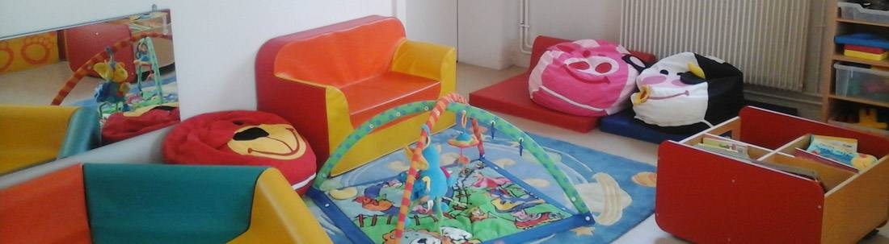

Le Relais Petite Enfance est un service référence de l’accueil du jeune enfant, tant pour les parents que pour les professionnels (assistant(e)s maternel(le)s ou garde d’enfants à domicile).
C’est un lieu d’information, de rencontre, d’écoute et d’échange. Des temps d’éveil et de découverte sont proposés aux enfants accueillis par les assistant(e)s maternel(le)s. Un accompagnement professionnel est proposé aux assistant(e)s maternel(le)s.
Horaires, le public est accueilli sur rendez-vous.
Lundi : de 8h30 à 12h et de 13h à 16h30 animation de 9h30 à 11h sur inscription
Mardi : de 13h à 16h30
Jeudi : de 8h30 à 12h animation de 9h30 à 11h sur inscription et de 13h à 16h30
Informations utiles :
Liste des assistantes maternelles sur le site www.monenfant.fr
www.net-particulier.fr (portail unique qui regroupe les liens ci-dessous + les sites IRCEM, Pôle Emploi, URSSAF, CESU et Assurance Retraite)
Direction régionale de l’économie, de l’emploi, du travail et des solidarités : https://grand-est.dreets.gouv.fr/Bas-Rhin
Législation en ligne : www.legifrance.gouv.fr
Relais Petite Enfance
7 rue du Maréchal Leclerc
Tél : 03 88 19 23 79
Courriel : petite.enfance@ville-hoenheim.fr